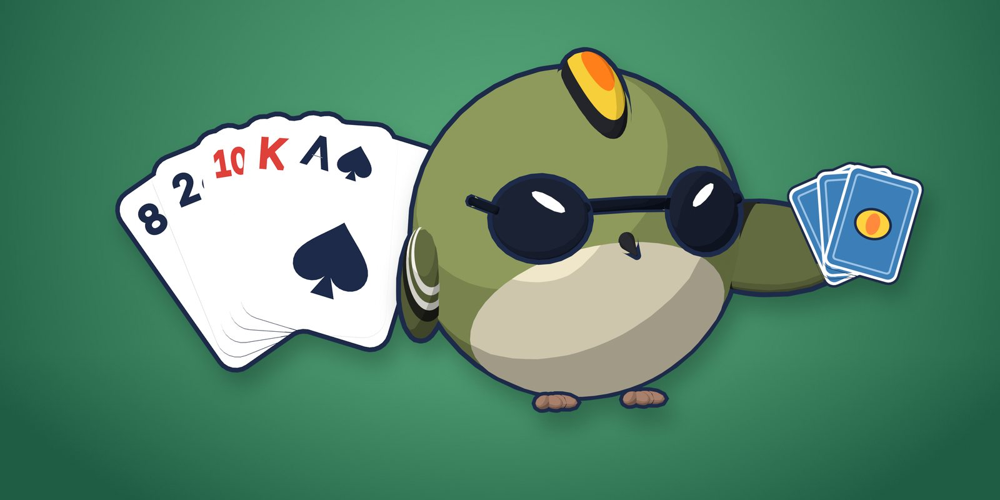

Kinglet
Press kit

Kinglet 1.1: Classics
Kinglet is a calm collection of mini games for iPhone that never need Wi-Fi, hosted by a little goldcrest from Öland, an island off the coast of Sweden. This December, Kinglet deals the cards.
Classics adds four timeless card games on Kinglet's own deck, where every king, queen and jack is Kinglet himself: Casino, the card game Swedes grow up with, plus Crazy Eights, Klondike and FreeCell.
In Casino and Crazy Eights, Kinglet is your opponent, and he plays the part. On Easy he nods off at the table. On Hard he flips down his sunglasses. In the two solitaire games every deal can be won, so a lost game is only ever one more try away.
The film
Kinglet on an iPhone: Hard mode, a game of Casino against Kinglet in sunglasses, and a deal of Klondike.
Download the film (MP4)The story
Kinglet is made by Olle Åkerman on Öland. The goldcrest is Europe's smallest bird, and it lives in the island's forests. In the app he cheers when you win and droops when you lose. Every character and card is modeled by hand in Blender.
It's made for the cabin without signal, the long flight and the ferry home. No accounts, no ads, no tracking. The eleven original games stay free, and Classics is a one-time purchase.
Screenshots


Facts
- Name
- Kinglet
- Developer
- Olle Åkerman, Öland, Sweden
- Platform
- iPhone
- Version 1.1
- December 2026
- Price
- Free, with eleven games. Classics is a one-time in-app purchase (29 SEK in Sweden). No subscription.
- Games
- 15: Tower Up, Flyway, Space Rocks, Snake, Bug Catch, Colour Sort, Merge, Mines, Memory, Four in a Row, Sudoku, and in Classics: Casino, Crazy Eights, Klondike, FreeCell
- Languages
- English and Swedish
- Privacy
- No accounts, no ads, no tracking. Optional anonymous statistics that can be turned off.
- Works offline
- Yes, every game
- Also
- Game Center leaderboards, VoiceOver, Dynamic Type, Reduce Motion and Dark Mode
Images
Free to use in articles and on the App Store. The pictures of Kinglet have transparent backgrounds.
Download everything (ZIP)


Contact
Olle Åkerman, hellokinglet@gmail.com. Happy to send more pictures or answer questions, in English or Swedish.